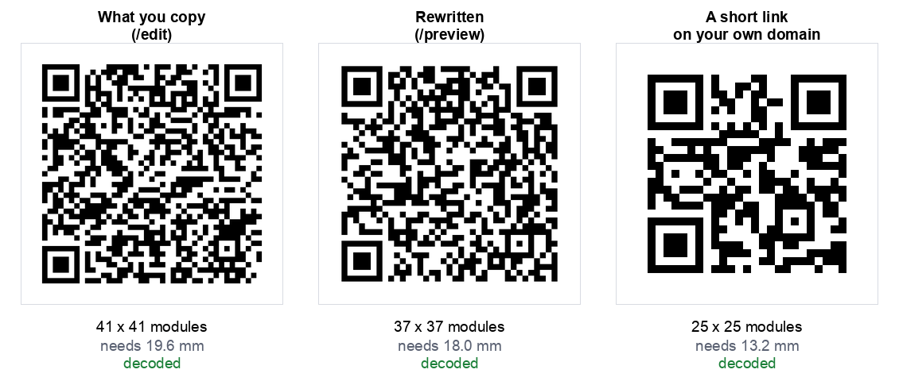

A QR code for a Google Drive file is not complicated, and the generator part takes seconds. Almost every one that fails in the wild fails for the same two reasons, and neither of them is the code.
One is permissions. The other is that the link people copy is the editor address, not the reading address.
The short version
- In Drive, open Share and set General access to Anyone with the link, role Viewer.
- Copy the link, then change the ending from
/editto/preview. - Paste it into a QR generator and download the image.
- Open a private browsing window, sign out of Google, and check the link opens.
If you would rather not edit the link by hand, our Google Drive QR code generator does steps 2 and 3 together: paste anything from Drive, Docs, Sheets or Slides and it rebuilds the address for you.
Step 1: set sharing, the step that matters most
By default a Drive file is Restricted, which means only people you have named can open it. A QR code cannot change that. Print a code for a restricted file and everyone who scans it lands on a request access screen, and you will not find out until the posters are on the wall.
- Right click the file in Drive and choose Share.
- Under General access, change Restricted to Anyone with the link.
- Set the role next to it to Viewer.
Viewer, not Editor. If the role is Editor, anyone who scans your poster can change the document, and on a shared menu or price list that is a real problem rather than a theoretical one. Viewer is the correct setting for anything printed in public.
One caveat if you are on a work or school account. Some organisations block Anyone with the link entirely, and the option will be greyed out or limited to your domain. If that is the case, no link format will help and you need the file hosted somewhere else.
Step 2: fix the link before you encode it
Copy the link and look at how it ends. A Google Doc, Sheet or Slides link will end in /edit, usually with ?usp=sharing after it. That address opens the full editor.
On a phone the editor is slow to load, prompts people to sign in, and puts an editing toolbar in front of someone who only wanted to read a menu. Change the ending:
| You have | Change it to | What happens on scan |
|---|---|---|
/edit?usp=sharing | /preview | Clean read only view, no toolbar |
/edit | /export?format=pdf | Downloads as a PDF |
| A stored file link | drive.google.com/uc?export=download&id=… | Downloads the file itself |
For a stored file rather than a Google format document, the file id is the long string between /d/ and /view in the address. Drop it into the download form above if you want the file to save rather than open in Drive's viewer.
Step 3: make the code
Paste the rewritten link into any QR code generator and download the image. There is nothing Drive specific about this step. Use ours if you like: the Drive generator recognises which kind of link you pasted and offers the right forms, or the URL generator takes a link you have already fixed.
Use PNG for digital, and if you are sending artwork to a printer, an SVG from our customiser will stay sharp at any size.
Step 4: test it the way a stranger would
This is the step that catches the permissions problem before it costs you a print run, and it takes twenty seconds.
- Open a private or incognito browsing window.
- Paste the link, or scan the code with a phone that is not signed into your Google account.
- If the file opens, you are done. If you see Request access, go back to step 1.
Testing while signed in tells you nothing, because you already have access. That is why so many of these codes reach print broken.
What we measured about the link forms
Drive links are long, and long links make denser codes that have to be printed larger. We measured each form with a realistic 33 character file id, at error correction level M:

| Link | Chars | Grid | Smallest usable print |
|---|---|---|---|
Google Doc, what you copy (/edit?usp=sharing) | 85 | 41 x 41 | 19.6 mm |
| Google Doc, export as PDF | 86 | 41 x 41 | 19.6 mm |
Google Doc, /preview | 76 | 37 x 37 | 18.0 mm |
| Drive file, address bar link | 82 | 37 x 37 | 18.0 mm |
| Drive file, direct download | 80 | 37 x 37 | 18.0 mm |
| A short link on your own domain | 25 | 25 x 25 | 13.2 mm |
Two things came out of this, and one of them is a correction to advice you will see elsewhere.
Switching to preview does shrink the code. 85 characters to 76 crosses a version boundary, 41 by 41 down to 37 by 37. You get a better experience and a sparser code from the same change.
Deleting ?usp=sharing does not. It saves twelve characters, which sounds useful, but the Drive file link stays at 37 by 37 either way. QR codes grow in fixed steps rather than character by character, so trimming within a step buys you nothing. Tidier, not smaller.
When not to use a Drive link at all
The last row of that table is the honest recommendation for anything printed in quantity. A short link on a domain you own gives a 25 by 25 code against 37 by 37, printable at 13 mm instead of 18, and it survives things a Drive link does not.
A printed code cannot be repointed. If the file is moved to another folder, renamed in a way that changes the id, or sits in an account that someone leaves, every copy you printed stops working. Point the code at yoursite.com/menu, redirect that to the Drive file, and you can move the file whenever you like.
For a poster in your own office that you can reprint in a minute, a Drive link is fine. For a thousand table cards, it is a single point of failure you do not control. Our guide to static and dynamic codes covers the tradeoff in full.
Common questions
Does the person scanning need a Google account?
Not if sharing is set to Anyone with the link. If it is restricted, they will be asked to sign in and then to request access, which is where most of these codes fail.
Can I put the file itself inside the QR code?
No. A QR code holds at most 2,331 bytes at the common error correction level, and a one page PDF is roughly twelve times that. Every QR code for a file, from every tool, is a link. We measured the limits in detail in can you put a photo in a vCard QR code.
Will the code expire?
The code will not. It is static and has nothing behind it. What can stop working is the file: move it, delete it, change the sharing, or lose the account, and the printed code goes with it.
Does this work for Sheets and Slides?
Yes, identically. The preview address exists for all three, and the id sits in the same place in the URL. Our Drive generator detects which one you pasted.
How big should I print it?
A Drive link needs at least 18 mm, and that is the floor rather than a target. For a table card aim for 45 mm, for a wall poster around 100 mm. Our sign maker applies those sizes, and the sign size guide explains where they come from.
Can I track how many people scanned it?
Not with a static code, and Drive will not tell you either. If you need numbers, point the code at a page on your own site and read your normal analytics, then redirect to the file from there.